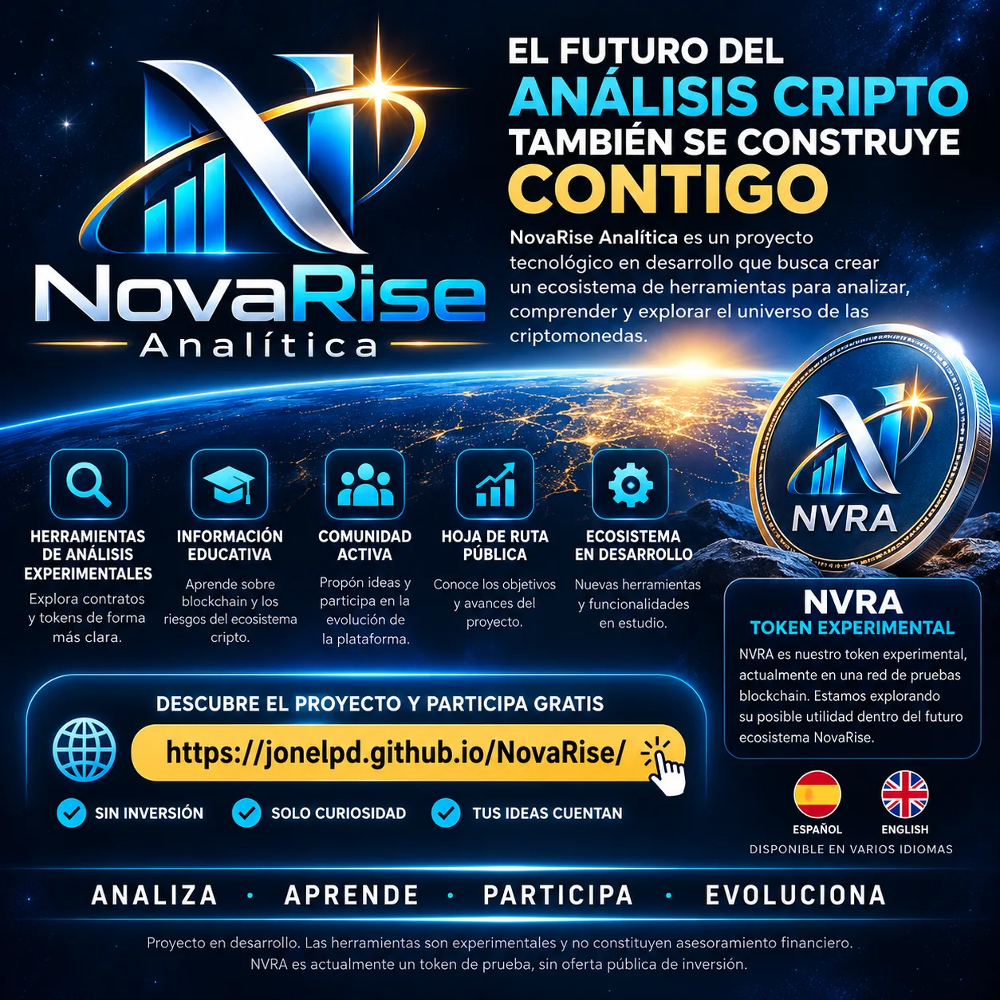
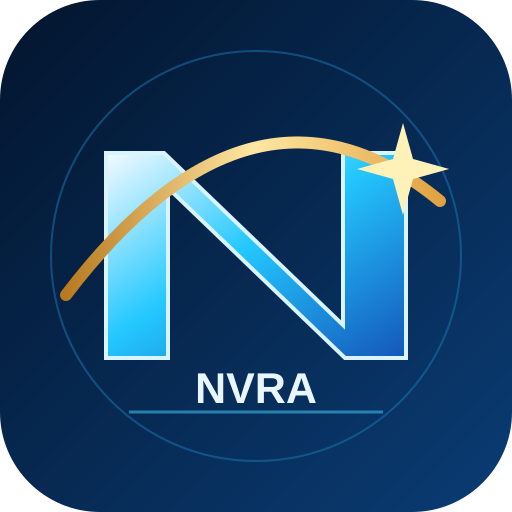

01
Token analyzer
Review technical indicators, holders and supply of public contracts through GoPlus Security.
Review contract indicators and explore holder and supply data with clear explanations of their limitations.
We never request private keys or seed phrases. We do not provide financial advice.
A favorable indicator does not guarantee that an asset is safe.
Review technical indicators, holders and supply of public contracts through GoPlus Security.
Understand minting permissions, transfer restrictions and other risk signals.
Learn about networks, fees and security best practices without sharing credentials.
This version retrieves EVM contract indicators from GoPlus. Results depend on provider availability and do not guarantee safety.
Do not enter passwords, private keys or seed phrases.
Enter a public EVM contract address to review available indicators.
Our goal is to build valuable services before integrating NVRA. These are proposed ecosystem areas; future features depend on development, validation and legal compliance.
Public contract indicators, markets and charts are available. We plan to explore deeper reports and potential NVRA credits for advanced services.
Try the analyzerContract monitoring, risk signals and configurable notifications for people tracking different projects.
Practical learning about blockchain, digital security and Web3 tools, with potential NVRA-enabled content.
API access, automation and technical integrations for projects and professionals.
Explore a space for specialist services, resources and verified community contributions.
Evaluate usage credits and ecosystem service benefits while retaining alternatives for people who do not use cryptocurrency.
Indicative stages with no committed dates. We will publish progress when there are verifiable results.
Educational guides and limited basic queries once the service is operational.
History, alerts and expanded reports. Pricing has not yet been validated.
Potential integrations and API, subject to demand, feasibility and costs.
Share your details to follow updates or express interest in testing future tools. This is not a purchase, investment or token distribution registration.
Privacy information: data is stored in the independent NovaRise Supabase project. The controller's formal identity and contact information must be published before promotional campaigns begin.
Explore our experimental tools, community, and ecosystem roadmap.
Join NovaRise
See what already exists, what we are preparing, and what remains an idea. These statuses describe progress, not launch promises or fixed deadlines.
Bilingual website, experimental EVM contract analyzer, and conceptual whitepaper. Indicators depend on third-party services and are not a security audit.
Interest form, feedback collection, and private CRM for reviewing suggestions. Automatic confirmation emails are not sent.
Share an ideaTest contract deployed on Polygon Amoy. There is no mainnet launch, public sale, or monetary value attached to test tokens.
View contract detailsReview submitted ideas, prioritize usability improvements, and deepen analyzer documentation and usefulness before adding complex services.
Assess contract monitoring, educational content and developer tools based on user value, resources and technical feasibility.
Explore use cases, security, sustainability and legal requirements. Any decision about mainnet or commercial services will require separate evaluation.
Only team-reviewed and approved initiatives appear here.
Loading initiatives…
Reference update: October 2026. Future stages may change based on testing results and community feedback.

NovaRise Utility Token (NVRA) exists solely as a prototype on Polygon Amoy Testnet (chain ID 80002). Its contract defines 100,000,000 NVRA with 18 decimals, initially minted to the designated treasury. Holdings of 100,000,000 NVRA were observed on the testnet explorer. This is neither an investment offer nor a mainnet launch.
0xCCC748d63333F9aF58f259CDF771d5AB1226e20DDeployment record: 2026-10-28. Public read-only links; this page does not request wallet connections or enable transfers. Whitepaper v0.4 documents the experimental deployment, but utility and the commercial model remain pending.
TESTNET / EXPERIMENTAL / NO MONETARY VALUE. Verified source code is not a security audit.
Thank you for your interest in NovaRise. We have successfully received your participation request.
Your email address is not yet verified. We will provide updates once the communications service is available.